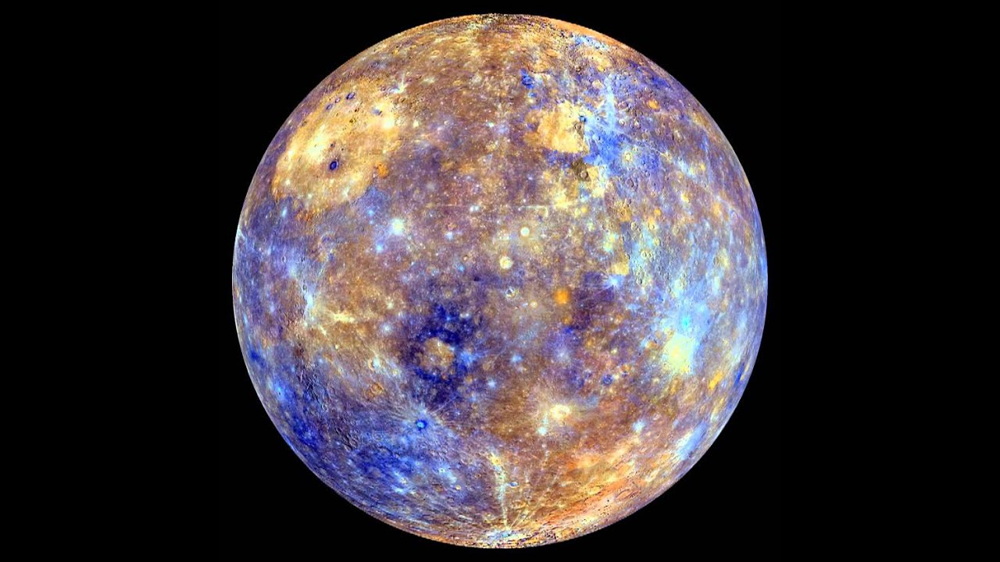
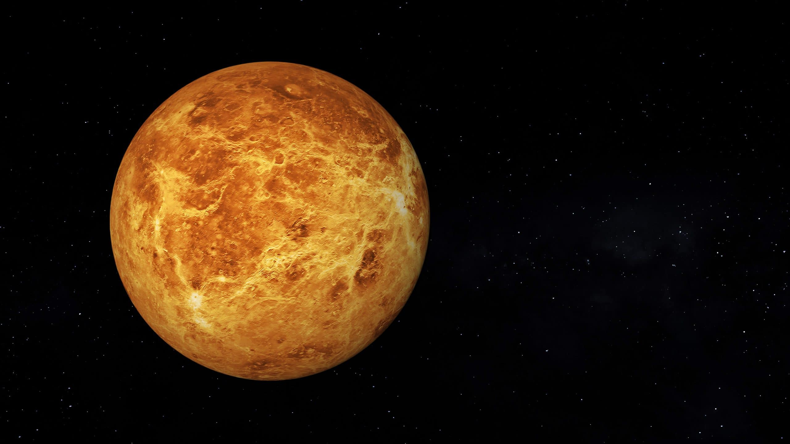
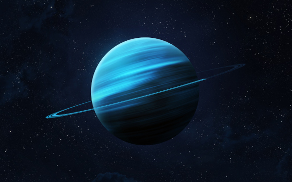
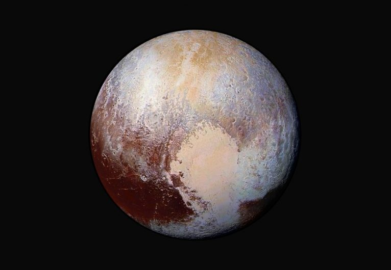

Definida como a estrela central do Sistema Solar, sendo a estrela mais perto da Terra e a que ajudou na criação da vida em nosso planeta. Basicamente, ele é uma bola de gás incandescente, chegando a uma temperatura de 5.778 K (5504,85°C)
em sua superfície, embora esteja a milhões de quilômetros da Terra (150 milhões de Km), ainda sentimos sua influência em nós.
O grande astro está tão distante, mas tão distante da Terra que a sua luz demora 8 minutos e 18 segundos para chegar aqui. Aliás, o astro rei, é só mais uma estrela dentre tantas outras, totalizando 200 bilhões, existentes em nossa
galáxia. Ele tem cerca de 5 bilhões de anos e, como toda estrela, um dia vai morrer. Mas calma aí, isso só vai acontecer daqui a uns 4 ou 5 bilhões de anos. Sua luz poderá ficar tão fraca que o calor que ele emite, não chegará
mais em nosso planeta e toda a vida por aqui pode desaparecer.
Com sua aparência semelhante a estar sempre em chamas, ele é realmente muito quente. Mas é um mero engano. Temos essa impressão porque a atmosfera solar é formada por gases que causam explosões e geram calor e luz. Há épocas em que
ocorrem explosões muito intensas na superfície do Sol. Sua energia é tão forte que causam destruições de satélites, problemas com voos e até mesmo, a queda de energia elétrica, devido a grandiosidade de energia que liberam. Um
interessante fenômeno que formam arcos luminosos nos pólos da Terra, conhecido como aurora boreal (região norte) ou aurora austral (região sul) são causados pelos ventos solares. Os mesmos, são lançados por partículas de material
solar, que são lançadas no espaço.
O Sol tem uma gravidade 28 vezes maior do que a da Terra e é essa força que atrai planetas, luas e asteroides. Isso mantém o sistema solar e faz com que cada corpo celeste fique em seu devido lugar.
Mercúrio

Conhecido como o vizinho mais próximo do Sol, Mercúrio é o primeiro planeta do Sistema Solar, a contar a partir da proximidade com o grande astro. Sua distância é de apenas 57,9 milhões de quilômetros da estrela em média. Com um diâmetro de 4878 Km, é
o menor entre os planetas do nosso Sistema Solar, depois do rebaixamento de Plutão o planeta-anão e também o que realiza mais agilidade o seu movimento de translação, executado a uma velocidade de aproximadamente 47,87 Km/s, totalizando
assim, 88 dias para completar sua volta ao redor do sol.
QJá em relação ao seu movimento de rotação, o planeta Mercúrio realiza-o apenas três vezes durante duas órbitas de translação, o que faz com que o seu dia solar seja o equivalente a 173 dias terrestres. Além disso, esse movimento
de rotação acontece com o seu eixo perpendicular ao plano da órbita. Por este motivo, Mercúrio não apresenta estações do ano e alguns locais não recebem a luz do Sol.
Vênus

Ocupando a segunda posição em ordem ordinal, temos Vênus. Ele é o segundo planeta do Sistema Solar mais próximo do Sol. Tem cerca de 800 milhões de anos e além do Sol e da Lua é considerado o corpo celeste mais brilhante no céu, razão
pelo qual é conhecido desde a antiguidade. Também conhecido como Estrela Dalva, estrela da manhã, estrela da tarde e joia do céu, é considerado um planeta irmão da Terra. Isso decorre em virtude das semelhanças de massa, densidade
e volume entre ambos. Vênus tem 12.104 km de diâmetro, ou seja, seu raio equivale a 6.052 km. Com sua superfície coberta por lava, a mesma é composta principalmente de dióxido de carbono(CO
2) e ácido sulfúrico(H
2SO4), é isso que faz a temperatura expandir tanto, a níveis suficientes para derreter o chumbo.
Pelo menos 97% de sua composição atmosférica é feita por dióxido de carbono (CO2), há também 3% de nitrogênio (N) e traços de dióxido de enxofre(S02), vapor d'água, monóxido de carbono (CO), argônio (Ar),
hélio (He), neônio (Ne), cloreto de hidrogênio (HCl) e fluoreto de hidrogênio (HF). Apesar de estar mais distante do Sol que Mercúrio, a temperatura de Vênus é maior. Lá, ela chega a 482 °C na superfície devido ao efeito estufa
dos componentes do planeta.
Vênus é o planeta mais próximo da Terra. Sendo contrária a todos os planetas do Sistema Solar, a rotação de Vênus ocorre de leste para oeste. Em homenagem à Vênus, a deusa romana da beleza e do amor, o planeta recebeu
esse nome.
Sem o auxílio de equipamentos, Vênus pode ser vista da Terra.
Terra
Chegamos ao nosso querido lar, o Planeta Terra. Sendo o terceiro planeta mais próximo ao Sol e o lar de milhões de espécies de seres vivos, a Terra é o quinto maior planeta de nosso Sistema Solar e o único a ter uma variada camada
de gases em sua atmosfera, fator esse que o garantiu a condição para existência de vida. Embora seu nome seja "Terra", cerca de 70% de sua superfície é composta por água (em seu estado líquido) e o fato mais intrigante sobre isso
é que nós só conhecemos 5% dos nossos oceanos. Estima-se que nosso planeta tenha sido formado há, mais ou menos, 4,6 bilhões de anos. De lá pra cá, a Terra passou por intensas mudanças. Algumas nítidas, outras bem longas e que
os seres humanos não notam como deveriam. Tais mudanças podem ocorrer de fatores internos, como a energia do núcleo, ou fatores externos, como chuvas, processos erosivos e ação humana. Os movimentos do planeta, como a rotação e
a translação, proporcionam uma forma esférica da Terra, que é achatada nos pólos. Essa forma recebe o nome de geóide. Seu interior é algo inóspito e, até pouco tempo atrás, desconhecido.
Com o desenvolvimento e avanço da tecnologia, a medição dos abalos sísmicos tornou possível conhecer o interior do planeta. As ondas sísmicas provocadas por esses abalos atravessam grandes regiões, podendo ser rastreadas e oferecer
informações valiosas sobre a estrutura interna da Terra. Camadas magmáticas de bilhões de anos atrás, ainda fazem parte de seu interior. A cada 33 m de profundidade, estima-se que a temperatura suba 1 ºC.
A presença de um forte campo magnético ao redor da Terra, possibilitou a confecção de bússolas, que ajudam na localização terrestre. Seus campos magnético tem como centro os Pólos Norte e Sul;
Em 1613, o astrônomo Galileu Galilei comprovou que a Terra não era o centro do Universo, mas foi obrigado, pela Igreja Católica, a negar sua teoria. O Papa João Paulo II, em 1992 pediu desculpas a Galileu pelo equívoco religioso e
reconheceu formalmente sua teoria;
O local mais profundo do Atlântico fica na Fossa de Porto Rico, um local denominado Depressão Brownson, a 8.378 m. A exploração também confirmou os 10.924 m da Depressão Challenger, na Fossa das Marianas, como o ponto mais profundo
do Pacífico à frente da Depressão Horizon (10.816 m), na Fossa Tonga;
Estudos apontam que a temperatura terrestre aumentou 0,8 ºC, após a revolução industrial.
Marte
Conhecido como o Planeta Vermelho, Marte é o quarto planeta mais próximo ao Sol. Durante a noite é identificado pela sua aparência, uma estrela avermelhada, característica essa que lhe rendeu o nome de Marte, nomeação feita pelos antigos
romanos. Além dos romanos, os chineses, coreanos e japoneses o denominaram de “Estrela de Fogo”. Para executar um movimento completo em torno do Sol, Marte precisa de 687 dias e para girar em torno de si mesma 24,6 horas, tomando
como base os dias terrestres.
Na superfície de Marte são encontradas calotas polares constituídas de água e dióxido de carbono gelados. A maior montanha de todo sistema solar, chamada de Olympus Mons, está presente no planeta. Ela é composta por uma grande cratera,
além de planícies e antigos leitos de rios. Em razão da fina espessura da atmosfera marciana, as temperaturas são baixas, não ultrapassando 20 graus, no entanto, os dados são imprecisos, pois não levam em conta as particularidades
regionais do planeta, no verão a temperatura atinge 22ºC e no inverno as temperaturas atingem -125°C.
A gravidade superficial de Marte é de cerca de 37% da gravidade encontrada na Terra. Isto significa que, em tese, você conseguiria saltar 3 vezes mais alto no planeta vermelho do que na Terra.
Marte possui a montanha mais alta do sistema solar. O Monte Olimpo é um vulcão de 21 km de altura e 600 km de diâmetro, sendo quase três vezes mais alto que o Monte Everest. Embora ter se formado ao longo de bilhões de anos, cientistas
descobriram evidências recentes de lava vulcânica, que sugere que ele ainda pode estar ativo.
Júpiter
Carregando o título por ser o maior planeta do Sistema Solar, Júpiter é o quinto planeta a partir do Sol,. Com um diâmetro de 142.984 Km, seria possível caber mil planetas como a Terra em Júpiter. Sua atmosfera é composta principalmente
de hidrogênio e hélio. A distância de Júpiter para o Sol é de aproximadamente 779 milhões de km. Em média a temperatura desse gigante corpo celeste é de -110 °C. Tendo uma de suas características mais marcantes, é a Grande Mancha
Vermelha. Esse corpo celeste é visível a olho nu, sendo conhecido como o quarto objeto mais brilhante do céu, atrás apenas do Sol, da Lua e de Vênus. Assim como Saturno, Júpiter também possui um sistema de anel em sua estrutura,
no entanto, bem menos nítido que o de Saturno.
No início do século XVII, Galileu Galilei foi o primeiro a analisar esse planeta através de um telescópio. Ele foi responsável pela identificação dos quatro maiores satélites naturais de Júpiter: Io, Europa, Ganimedes e Calisto. O
avanço tecnológico auxiliou na obtenção de maiores informações e, atualmente, são conhecidos 63 satélites naturais deste planeta.
Seu movimento de rotação é realizado em um tempo equivalente a dez horas terrestres. Desse modo, um dia nesse planeta, tem duração de dez horas na Terra. Já o movimento de translação é concluído em 12 anos terrestres, portanto um ano
em Júpiter é equivalente a 12 anos na Terra.
Saturno
Sendo mais conhecido pelos anéis que o envolve, Saturno é o sexto planeta do Sistema Solar. Considerado o segundo maior planeta do sistema solar, ficando apenas atrás de Júpiter, apresentando um diâmetro de 120 536 km, que é cerca
de nove vezes maior que o diâmetro da Terra. Seu movimento de rotação é bastante rápido, o que causa o achatamento de seus polos. Ao todo, o planeta leva cerca de 10 horas e 39 minutos para completar uma volta em torno de si mesmo,
enquanto o seu movimento de translação leva cerca de 29 anos, 167 dias e 6 horas terrestres para ser finalizado. Formados por vários pequenos anéis separados entre si e por algumas fendas, assim são formados os anéis de Saturno,
sendo a mais notável delas a Divisão de Cassini, que separa os anéis A e B.
A origem desses anéis ainda não foi totalmente comprovada, havendo várias teorias. Uma delas é que é bem possível que sua origem seja de partículas de luas do planeta que foram alvos por asteroides e destruídas. Saturno é um planeta
gasoso, sendo basicamente composto de hidrogênio. Ele possui a peculiaridade de ser menos denso do que a água, ou seja, se fosse possível “mergulhá-lo” em uma bacia d'água, ele flutuaria!. Em sua superfície, os ventos movem-se
com muita rapidez e podem alcançar incríveis 1800 km/h, o que seria quatro vezes mais rápido do que a maioria dos furacões aqui da Terra.
Observando da Terra, Saturno é um dos 5 planetas visíveis a olho nu. Então, se Saturno estiver no céu à noite, você pode sair e vê-lo. Mas claro, que para ver os anéis você teria que olhar através de um telescópio, porém você pode
surpreender seus amigos apontando para aquela estrela brilhante no céu e informá-los de que estão olhando para Saturno.
Urano

Definido como o terceiro maior planeta do Sistema Solar, Urano é o sétimo planeta a partir do Sol. Foi o primeiro a ser encontrado por meio de um telescópio, pelo astrônomo William Herschel em 1781. Demora 84 anos terrestres para completar
uma rotação ao Sol. Semelhante a Vênus, Urano gira de leste a oeste. Observações mais detalhadas do planeta foram realizadas pela sonda Voyager, em 1986 e pelo telescópio Hubble. Em conjunto com Netuno, é um dos dois gigantes de
gelo do céu. É composto, principalmente, por hidrogênio e hélio, sendo classificado também como planeta gasoso.
A velocidade da órbita de Urano é de 27,4 mil km/h e a massa é 14,5 vezes maior que a da Terra. A atmosfera de Urano é formada, principalmente, de hidrogênio, hélio e metano. A temperatura na superfície chega a -216ºC. Sua cor azulada
é resultado da absorção de luz vermelha do metano nas camadas superiores da atmosfera.
O planeta Urano exibe 13 anéis. As observações mais assertivas dos anéis de Urano ocorreram em 1977, por equipes do Airborne Observatory Kuiper e do Observatório de Perth, na Austrália. Nomeadas com personagens de obras de William
Shakespeare e Alexander Pope, o planeta possui o total de 27 luas. As primeiras quatro luas, Titania, Oberon, Ariel e Umbriel foram descobertas entre 1787-1851. A mais complexa de todas, Miranda, foi descoberta em 1948.
Netuno
Carregando o mesmo nome do deus romano do mar, Netuno é o oitavo planeta a partir do Sol. Foi descoberto em 1846 e é um gigante gasoso, bem como Júpiter, Saturno e Urano. Está distante 4,5 bilhões de km do Sol e demora 156 anos terrestres
para completar uma órbita. O planeta demora 16 horas terrestres para completar seu movimento de rotação. Possui 13 luas confirmadas e uma ainda aguarda a confirmação por cientistas. Formado, principalmente, de água muito quente,
amônia e metano em seu núcleo, que tem aproximadamente o tamanho da Terra. Tem sua atmosfera formada por hidrogênio, hélio e metano. Similar a Urano, a cor azulada brilhante de Netuno é correspondente a elevada quantidade de metano
na atmosfera.
Baseadas em vários deuses do mar e ninfas da mitologia grega, foram nomeadas as 13 luas de Netuno. Sua lua principal, Tritão, foi descoberta pelo matemático inglês William Lassell, que era um astrônomo amador.
Em Netuno e Urano, existe chuva de diamantes. Tendo suas atmosferas formadas intensamente por carbono, elemento químico este, que dá origem ao diamante, onde transforma tudo nesta pedra preciosa.
Plutão

Conhecido como o planeta anão, Plutão está localizado a 5,9 bilhões de quilômetros distante do Sol. Importante deixar claro, que Plutão não é mais considerado um planeta do sistema solar desde 2006. No mesmo ano, a União Astronômica
Internacional o classificou como um "planeta anão" por conta das novas categorias que o definiam um corpo celeste como planeta.
Um dia Plutão demora 153 horas terrestres (cerca de 6 dias). Já um ano a 248 anos terrestres. Vale considerar que a rotação de Plutão é retrógrada, girando de leste a oeste, como ocorre com Urano e Vênus. Plutão é formado por um núcleo
rochoso sobre um manto de gelo e metano congelado. Sua temperatura estimada é de -220 ºC, por isso, é conhecido também como Anão Gelado. Dentre suas cinco luas, a principal a orbitar Plutão é conhecida como Caronte, descoberta
em 1978, sendo quase tão grande quanto Plutão.
Uma das características mais chamativas de Plutão é o seu "Coração". Em sua superfície há uma região de cor clara de aproximadamente 1.590 km, que é muito semelhante com um coração.